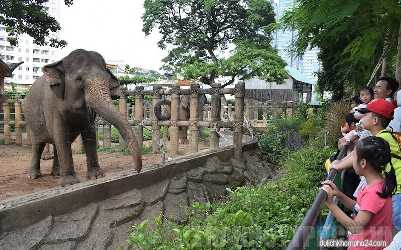

8 địa điểm Du Lịch Nổi Bật ở Sài Gòn
1-> Phố đi bộ Bùi Viện
Phố Tây Bùi Viện, hay còn gọi là Phố đi bộ Bùi Viện hoặc Ngã tư quốc tế là một khu phố nằm trên các con đường Đề Thám, Bùi Viện, Phạm Ngũ Lão, Đỗ Quang Đẩu, thuộc quận 1, Thành phố Hồ Chí Minh. Khi đến phố đi bộ Bùi Viện, bạn sẽ được hưởng "four free" (4 miễn phí), gồm: nhà vệ sinh; wifi; cung cấp thông tin, hỗ trợ du khách miễn phí và "nụ cười miễn phí". Cứ vào cuối tuần, trên con phố Bùi Viện, tấp nập người qua lại, cả khách Tây và khách Ta. Con đường này cùng với đường Đề Thám và Phạm Ngũ Lão được người ta gọi là phố Tây. Khu phố chẳng bao giờ ngủ, cánh cửa hàng ven đường cũng không bao giờ đóng.
2-> Phố đi bộ Nguyễn Huệ
Phố đi bộ Nguyễn Huệ là địa điểm du lịch Sài Gòn về đêm được giới trẻ đặc biệt ưa thích. Con phố này được xây dựng vào tháng 4 năm 2005, dài 670 và rộng 64 m, lát nền đá granite và thiết kế hai đài phun nước lớn. Xung quanh là hệ thống cây xanh, đèn điện, âm thanh,… khiến cho nó trở nên thật lung linh. Cứ tới đến người dân và du khách lại tới đây để dạo mát, hòa mình vào không khí sôi động. Hơn nữa vào cuối tuần còn hay có các chương trình giao lưu âm nhạc của các bạn trẻ rất thú vị.
3-> Cầu Ánh Sao Sài Gòn
Có lẽ cầu Ánh Sao là địa điểm du lịch ở Sài Gòn đã quá nổi tiếng, được mệnh danh là cây cầu đi bộ đẹp nhất của thành phố. Cầu nằm nối giữa Hồ Bán Nguyệt và kênh Đào thuộc khu đô thị Phú Mỹ Hưng, thiết kế có hệ thống đèn led 7 màu, hệ thống phun nước hai bên, tạo cho ai khi đến đây đều có cảm giác như đang đi trên dải ngân hà. Đứng ở vị trí cầu ngắm cảnh hay thư giãn cũng rất tuyệt. Ngoài ra, ở hai đầu cầu còn có quảng trường rộng lớn, xanh um với ghế đá kê sẵn cũng là không gian giải trí lý tưởng.
4-> Công viên Suối Tiên
Đây là một khu liên hiệp vui chơi giải trí, được xây dựng kết hợp giữa các yếu tố văn hóa dân tộc. Tại đây có rất nhiều câu chuyện về văn hóa được tái dựng như: Lạc Long Quân – Âu Cơ, Sơn Tinh – Thủy Tinh, Vua Hùng, bánh chưng bánh giầy,… Đặc biệt là khu biển Tiên Đồng – biển nhân tạo đầu tiên tại Việt Nam. Điểm đến này từ khi được thành lập cho đến nay vẫn luôn thu hút đông đảo du khách, nhất là vào dịp nghỉ, cuối tuần. Chỉ với một tấm vé vào cổng, bạn sẽ được tham quan miễn phí các công trình lịch sử, xem các show diễu hành, show tứ linh hội tụ, ca nhạc tổng hợp,… và trải nghiệm các trò chơi hấp dẫn như: phi thuyền đại chiến các vì sao, đường đua siêu xe thần tốc, xem phim 4D, 9D, bắn súng Laser,… hay khám phá Phụng Hoàng Tiên, lâu đài tuyết, lâu đài phép thuật, kỳ lân cung cùng rất nhiều trò chơi cảm giác mạnh khác. Công viên cũng có các trò phù hợp với lứa tuổi của các bé.
5-> Công viên giải trí Đầm Sen
 Bạn đang tìm kiếm một điểm du lịch cuối tuần, không cần phải đi đâu xa, công viên Đầm Sen Sài Gòn chính là một lựa chọn hoàn hảo dành cho bạn. Công viên được xây dựng trên diện tích quy mô lớn hơn 50ha, chia thành công viên nước và công viên hóa hóa Đầm Sen. Nơi đây được ví như thiên đường giải trí, nơi mà bạn sẽ được trải nghiệm vô số các hoạt động thú vị mà rất hiếm nơi ở Sài Gòn có được.
Đến công viên nước, bạn sẽ cảm nhận ngay về một “ốc đảo” xanh mát với 36 thiết bị trò chơi dưới nước hiện đại, một hồ tạo sóng mát lạnh rộng 3.000 m2, hứa hẹn sẽ cho bạn và gia đình những giây phút thư giãn đúng chất. Còn công viên văn hóa (hay còn gọi là Đầm Sen Khô) quy tụ nhiều trò chơi trên cạn từ cảm giác mạnh đến nhẹ, có cả trò đạp vịt,… phù hợp cho cả người lớn và trẻ em.
Bạn đang tìm kiếm một điểm du lịch cuối tuần, không cần phải đi đâu xa, công viên Đầm Sen Sài Gòn chính là một lựa chọn hoàn hảo dành cho bạn. Công viên được xây dựng trên diện tích quy mô lớn hơn 50ha, chia thành công viên nước và công viên hóa hóa Đầm Sen. Nơi đây được ví như thiên đường giải trí, nơi mà bạn sẽ được trải nghiệm vô số các hoạt động thú vị mà rất hiếm nơi ở Sài Gòn có được.
Đến công viên nước, bạn sẽ cảm nhận ngay về một “ốc đảo” xanh mát với 36 thiết bị trò chơi dưới nước hiện đại, một hồ tạo sóng mát lạnh rộng 3.000 m2, hứa hẹn sẽ cho bạn và gia đình những giây phút thư giãn đúng chất. Còn công viên văn hóa (hay còn gọi là Đầm Sen Khô) quy tụ nhiều trò chơi trên cạn từ cảm giác mạnh đến nhẹ, có cả trò đạp vịt,… phù hợp cho cả người lớn và trẻ em.
6-> Thảo Cầm Viên Sài Gòn
 Nằm ở trung trung tâm thành phố, ngay cuối con đường Lê Duẩn, Thảo Cầm Viên hay còn gọi là sở thú – một trong những địa điểm du lịch Sài Gòn cho trẻ em mà bạn không thể qua nếu đang đi cùng gia đình mình. Với 1.000 cá thể động vật trên khắp thế giới và hơn 2.000 cây và hoa cùng với đó khu vực trò chơi, nơi quy tụ hàng chục trò chơi như xe điện, máy bay, thú chim, câu cá, ngựa quay, xe lửa,…rất lý tưởng để trẻ vừa học vừa chơi. Hơn nữa, không gian xanh rộng lớn cũng giúp bạn xua tan cái nắng nóng của miền Nam. Đó là lý do mà mỗi năm Thảo Cầm Viên đều đón trên 2 triệu lượt khách.
7-> Khu du lịch Bình Quới
Làng Tre Việt là khu du lịch sinh thái nằm cách trung tâm Sài Gòn chỉ chưng 8 km. Với vị trí lý tưởng này, nó đã trở thành địa điểm vui chơi được phần lớn các bạn trẻ lựa chọn cho buổi dã ngoại cuối tuần. Đây là tổ hợp gồm nhiều dịch vụ như buffet, nhà chòi, nhà nghỉ Hoa Mua, nhà nghỉ gia đình, …. Đến với không gian đậm chất vùng sông nước Nam Bộ này du khách sẽ bắt gặp những hình ảnh quen thuộc như: chiếc lu nước, xuồng ba lá, cầu khỉ,… tạo nên vẻ đẹp rất độc đáo. Trong khu du lịch có dịch vụ du thuyền trên sông, chèo thuyền, câu cá, các trò chơi xích đu, tô tượng,… Cũng từ đây cho ra đời nhiều bức hình cực chất.
8-> Hẻm Bia: Lost in HongKong
Đây thực chất là một địa điểm ăn chơi nổi tiếng ở quận 1 nhưng lại đước giới trẻ săn lùng vì background “sống ảo” như phim điện ảnh. Con hẻm này lấy concept chủ đạo là con phố tực rỡ của những ánh đèn led, biểu hiệu neon, đèn lòng đỏ và poster chẳng chịt như HongKong. Tất cả được trang trí tinh tế mang tới vibe đậm chất điện ảnh và nhiều góc check-in cực chất mà chỉ cần đưa máy lên là có ngay bộ ảnh “so deep”. Tới đây để “rinh” những bức hình siêu chất. Tại đây có nhiều loại bia ngon và giá cả cũng tương đối “mềm”, đi kèm là các món ăn nhẹ khi uống cùng bia rất đậm đạ hương vị xứ cảng Thơm. Ngoài ra, do được đặt cạnh phố tây Bùi Viện sẽ là cơ hội để bạn được vui chơi thả ga.